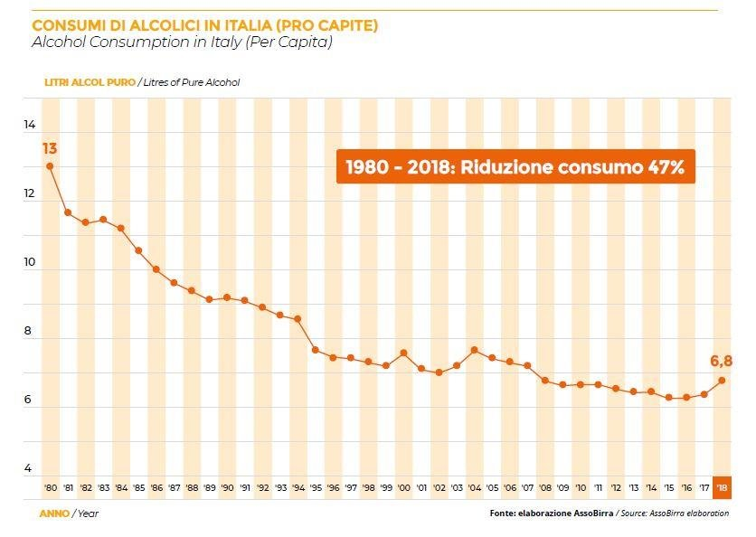
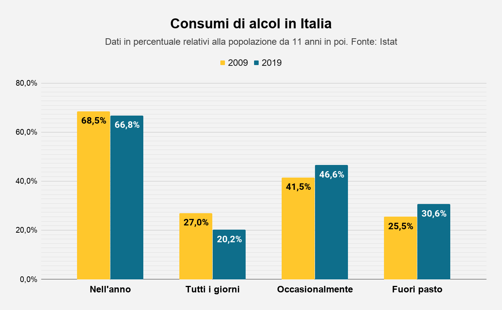

EFFETTI DELL'ALCOL SUL NOSTRO CORPO
In Italia i dati evidenziano una tendenza al consumo di alcol, con un incremento particolarmente significativo tra le donne. Però il consumo giornaliero di bevande alcoliche è diminuito engli ultimi anni. Nel 2016, il 21,4% della popolazione di età pari o superiore a 11 anni consumava alcol quotidianamente, in calo rispetto al 29,5% del 2006. Parallelamente, è aumentata la percentuale di consumatori occasionali, passando dal 38,8% nel 2006 al 43,3% nel 2016.
L'abuso di alcol è strettamente correlato agli incidenti stradali sia in Italia che in Europa come si può consultare nella scheda in alto. In Italia nel 2022 le vittime coinvolte in incidenti stradali legati alla guida in stato di ebbrezza sono state 85, mentre i feriti sono stati 5.786. Il 17,4% delle violazioni al codice della strada per guida sotto l’effetto dell’alcol è stato registrato in concomitanza di un incidente stradale, con o senza lesioni a persone. Questi dati sono molti significativi ed evidenziano la pericolosità della guida in stato di ebrezza. Nonostante le campagne di sensibilizzazione e i controlli stradali, il numero di incidenti alcol-correlati rimane preoccupante, sottolineando la necessità di interventi più efficaci per ridurre questi eventi.
 